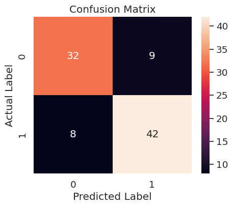
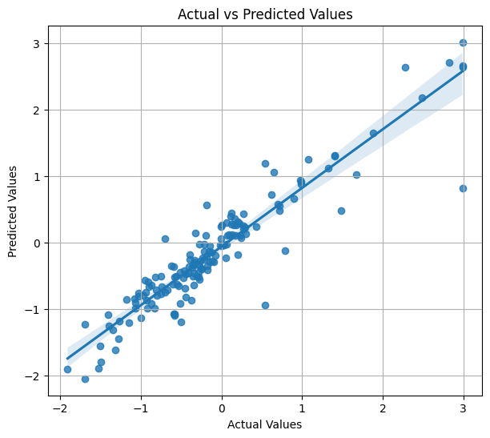

CH 01딥러닝은 무엇이 다른가 — 은닉층과 역전파#
학습
딥러닝은 인공신경망을 깊게 쌓아 입력에서 특징을 사람이 골라주지 않고 모델이 스스로 조합하게 만드는 방식이다. 입력층·은닉층·출력층으로 데이터가 흐르며, 은닉층이 여러 개로 깊게 쌓이기 때문에 'deep'이라는 이름이 붙는다. 학습은 순전파로 예측을 내고, 손실 함수로 오차를 재고, 역전파로 가중치를 거꾸로 보정하는 세 단계의 반복이다.
의문 → 시행
수업에서 "은닉층이 아주 많은 게 딥러닝"이라는 설명을 듣고 의문이 생겼다. 층을 깊게 쌓는 게 핵심이라면 결정트리나 KNN을 겹겹이 쌓아도 딥러닝이 되어야 하는 것 아닌가. 그렇다면 굳이 퍼셉트론을 쓸 이유는 무엇인가.
따져보니 가설은 어긋났다. 층을 거꾸로 타고 오차를 전달하는 역전파는 각 단계가 미분 가능해야 성립한다. 결정트리의 if-else 분기나 KNN의 개수 세기는 값이 뚝뚝 끊겨 미분이 안 되므로, 아무리 쌓아도 위아래 층이 수학적 신호로 연결되지 않는다. 반대로 퍼셉트론은 선형 연산과 매끄러운 활성화로 이뤄져 있어 학습 신호가 바닥층까지 흐른다.
CH 02heart DNN 세우기 — 데이터 준비와 정규화#
학습
heart.csv는 303행 14열로, age·sex·cp 등 13개 입력과 target(0/1) 정답으로 나뉜다. target 비율은 1이 약 0.545로 균형에 가깝다. 입력은 단위가 제각각이므로 StandardScaler로 Z-점수 정규화하되, scaler는 학습 데이터에만 fit하고 평가 데이터에는 transform만 적용해 데이터 누수를 막았다.
의문 → 시행
train_test_split에 stratify=Y_data를 넣어 학습·평가의 target 비율을 비슷하게 맞췄다. 모델은 nn.Sequential로 13 → 1000 → 1000 → 1 구조에 출력층 Sigmoid를 달았고, 옵티마이저는 SGD(lr=0.01), 손실은 MSELoss로 두었다. 이진 분류에서 보통 BCELoss를 쓰지만 원본 코드와 동일하게 유지하려고 MSELoss를 그대로 사용했다.
학습용 입력 데이터 모양: (212, 13) 평가용 입력 데이터 모양: (91, 13) 학습용 target 비율 1 0.542453 0 0.457547 평가용 target 비율 1 0.549451 0 0.450549
모델 파라미터 수는 1,016,001개로, 입력 13개에 비해 은닉 뉴런 1000개를 두 층 쌓자 백만 단위로 불어났다. 표 데이터 분류치고는 과한 용량이지만, 활성화함수가 결과를 어떻게 가르는지 보기에는 좋은 무대였다.
CH 03tanh에서 멈춘 학습, ReLU로 풀린 학습#
의문 → 시행
은닉층 활성화를 tanh로 두고 1000 에포크를 돌렸다. 손실은 0.25에서 시작해 0.1 부근까지 내려간 뒤 사실상 정체했다. 후반 수백 에포크 동안 소수 셋째 자리만 미세하게 줄어, 더 학습해도 풀릴 기미가 보이지 않았다.
DNN 학습 시작 에포크: 0, 손실: 0.251605 에포크: 100, 손실: 0.118648 에포크: 500, 손실: 0.103743 에포크: 990, 손실: 0.099519 최종 학습 시간: 3.0초
은닉층 활성화를 ReLU로 바꾸자 학습이 다시 풀렸다. 음수를 0으로 끊고 양수는 그대로 통과시키는 ReLU는 양수 구간에서 기울기가 1로 유지되어, 넓은 층을 거쳐도 학습 신호가 죽지 않았다. 활성화·셔플·튜닝을 거쳐 정확도는 0.648 수준에서 회복되어 F1 0.75에 이르렀고, 최종적으로는 다음과 같았다.
최종 정확도(Accuracy): 0.813 최종 F1 점수: 0.832
CH 04recall 1.0의 함정 — 슬라이싱 대신 셔플#
의문 → 시행
실험을 빠르게 돌리려고 raw[:100]처럼 앞부분만 잘라 썼더니, 평가에서 환자(target=1)만 잔뜩 몰려 들어왔다. 혼동행렬이 한 칸에 집중되고 recall이 1.0으로 찍혔다. 처음엔 모델이 완벽한 줄 알았지만, 실제로는 음성 표본을 거의 보지 못한 채 전부 양성으로 찍어 맞힌 착시였다.
raw.sample(frac=1)로 전체를 셔플한 뒤 다시 나누자 두 클래스가 고르게 섞였고, 혼동행렬이 네 칸에 제대로 퍼지면서 recall도 정상 범위로 돌아왔다. 정렬된 원본을 순서대로 자르는 것과, 섞은 뒤 나누는 것의 차이가 평가 지표 전체를 바꿨다.

CH 05시드를 빼면 무엇이 흔들리는가#
학습
노트북은 torch.manual_seed와 np.random.seed를 SEED=111로 고정해 가중치 초기화와 분할을 재현 가능하게 만든다. 시드는 결과를 매번 똑같이 만드는 게 아니라, 비교 실험을 같은 출발선에 세우는 장치다.
의문 → 시행
시드를 제거하면 결과가 통째로 흔들릴 거라 예상하고 SEED 고정을 빼고 여러 번 돌려봤다.
예상과 달랐다. 정확도와 F1은 약 0.802와 0.820 수준을 안정적으로 유지했고, 실행마다 눈에 띄게 변한 것은 손실값이었다. 출발점인 초기 가중치는 달라지지만, 충분히 학습된 뒤의 결정 경계는 비슷한 자리로 수렴해 최종 지표가 크게 흔들리지 않았다.
CH 06분류에서 회귀로 — housing DNN과 정리#
학습
housing.csv는 506행으로, MEDV(주택 가격 중앙값)를 예측하는 회귀 문제다. 같은 DNN 골격이지만 출력층 뒤에 Sigmoid를 두지 않고, 손실은 MSELoss를 쓴다. 구조는 12 → 200 → 1000 → 1에 은닉층은 ReLU, 학습은 DataLoader로 배치(64)를 shuffle=True로 섞어 돌렸다.
의문 → 시행
회귀에서는 정확도 대신 RMSE와 R²로 성능을 본다. 500 에포크 학습 후 평가 지표는 다음과 같았다.
Epoch [ 1/500] - Train MSE Loss: 0.847733 Epoch [ 500/500] - Train MSE Loss: 0.036485 DNN 테스트 평균 제곱 오차(MSE): 0.114487 RMSE: 0.338359 R² Score: 0.870292
표준화된 MEDV를 원래 단위로 되돌리면 RMSE 약 3.11(천 달러 단위), R²는 0.870으로 동일했다. R²가 0.87이라는 것은 모델이 주택 가격 변동의 약 87%를 설명한다는 뜻이다. 실제값과 예측값을 비교하면 점들이 대각선 부근에 모인다.

결론(중간)
하루 동안 확인한 것은 단순했다. 첫째, 깊은 신경망의 학습 가능성은 미분 가능한 빌딩 블록에서 나온다. 둘째, 같은 구조에서 결과를 가른 것은 활성화함수(tanh→ReLU)와 데이터를 섞었는지(슬라이싱→셔플)였고, 시드는 재현성을 줄 뿐 성능을 만들지 않았다. 셋째, 분류와 회귀는 끝단만 다르다.
📚 근거 출처
- 실습 코드 —
ml_workspace/from_colab_deep_learning/0608-s(heart_pytorch_dnn · housing_pytorch_dnn) - 강의 PDF — 딥러닝개념_프레임워크설치
- 공식 문서 — PyTorch (nn.Module·활성화함수)